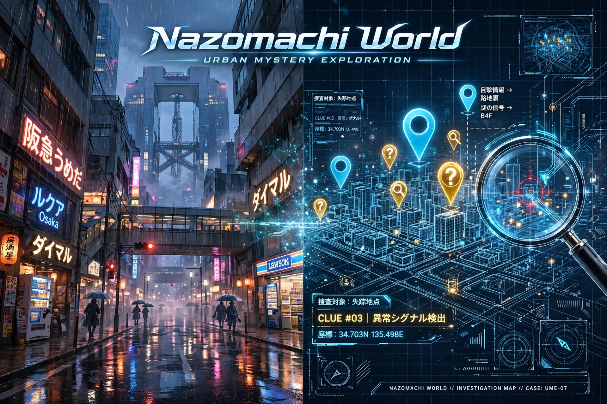

どの街で、事件を起こす？
場所を選ぶと、その場所でしか起きないミステリーが始まります。実在のスポットを巡って手がかりを集め、犯人とトリックを推理してください。
⚡ シナリオは全て事前生成 — 待ち時間ゼロですぐ始まる
🏠 おうちモード（Street View捜査）専用
1 場所を選ぶ
2 テーマを選ぶ
※ おうちモード（Street View風の地図で捜査）で遊べます。所要時間 約10分
※ 場所は3拠点の選択式です。自由入力にしないのは、実在しないスポットや手がかりを捏造させないためです（実在性がこのゲームの命です）。
🗺️ 今後のロードマップ
GPSで実際に街を歩いて捜査する「まちモード」は、MVPではあえて作っていません。屋外での検証リスクを排除し、審査・デモ体験を安定させるため、次期ロードマップへ分離しました（Own the Why：二兎を追って核の体験がぶれるより、おうちモードを磨き切る判断です）。